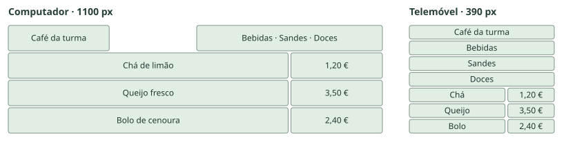

Medidas desta ficha
- Medidas a usar
- Cabeçalho: altura mínima 112 px; intervalo entre grupos 16 px. Atalhos e produtos: 8 px entre itens. Nome e preço: intervalo mínimo 16 px.
- Quando muda a disposição
- Até 640 px inclusive: cabeçalho e atalhos em coluna. Acima de 640 px: em fila.
- Resultado esperado
- 390 px: três atalhos empilhados. 768 e 1100 px: três atalhos na mesma fila.
Larguras para testar: 390 px, 768 px e 1100 px. São larguras da janela do navegador. Só escreves uma media query se o exercício a pedir.
No CSS: escreve 16px, sem espaço entre o número e a
unidade.
Primeiro passo: Abre style.css no editor e lê a etapa 1.
Quando fizeres uma alteração, guarda o ficheiro e atualiza esta página para veres o que
mudou.
Ver o resultado esperado no computador e no telemóvel
Este esquema mostra as posições, sem escala. Para a largura intermédia, usa os testes no fim.

Área de trabalho · Cabeçalho e ementa rápida
Café da turma
Ementa rápida
- Bebidas · Chá de limão 1,20 €
- Sandes · Queijo fresco 3,50 €
- Doces · Bolo do dia 2,00 €
Etapas e conceitos desta ficha
Já conheces: Classes, listas e ligações a um ID; margens e media queries.
Com apoio nesta ficha: Um pai organiza os seus filhos diretos: a marca e a navegação precisam de uma fila; os três atalhos precisam de outra.
- Separa a marca dos atalhos
- Põe os três atalhos numa fila
- Alinha os preços
- Empilha a navegação no telemóvel
- Testa os destinos e atualiza um produto
Encontras as instruções de cada etapa em style.css.
Quando é que está pronto?
Usa o modo responsivo do navegador. Experimenta 390 px (telemóvel), 768 px (intermédio) e 1100 px (computador).
Assinala os testes que passaram. As marcas desaparecem quando atualizas a página; guarda o
resultado em registo.md.
Desafio opcional
Destaca durante o teste a linha de ementa cujo atalho foi ativado.
Para a discussão final: Distribuição no eixo principal
No cabeçalho largo, mantém o mesmo intervalo mínimo. Compara encostar os dois grupos ao fim, centrá-los e repartir o espaço à volta de cada um. Observa o espaço nas extremidades.
Faz a experiência no inspetor e repõe as regras no fim.